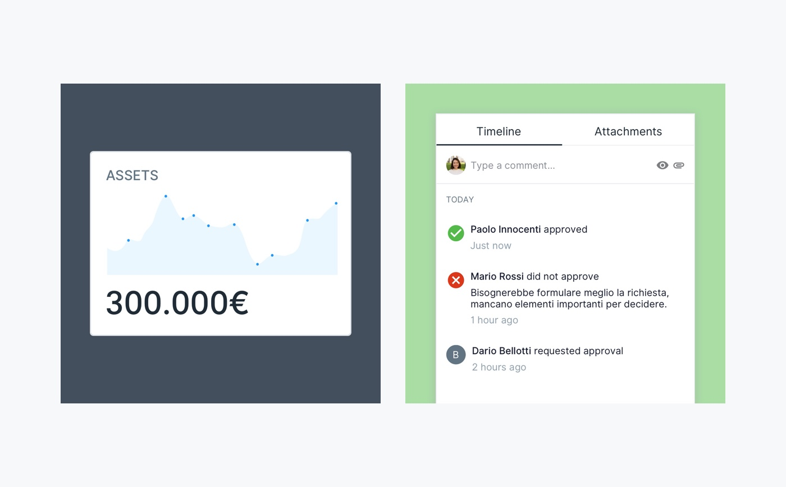

Hello, I'm Paolo.
UX/UI designer at Moze, where we help companies transform their ideas into successful digital products.
Projects

Serioplast — Creating a Design System for enterprise software
Design Sprint, UX/UI Design, User Testing
Serioplast — Creating a Design System for enterprise software
Design Sprint, UX/UI Design, User Testing
Articles
- Let your users help you identify new product design opportunities
- Three steps of Product Research for the success of your product
- How a Product System can help you focus on what matters
About me
I strive for simplicity and I am committed to making things easy and beautiful through design. By nature, I am a curious individual energized by people. Collaboration is my favorite design tool.
If we team up we can do great work.
Get in touch
© 2022 — Paolo Tripodi